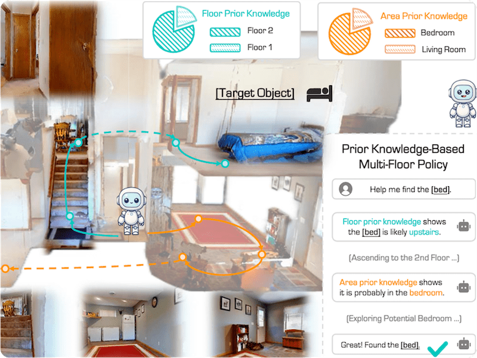
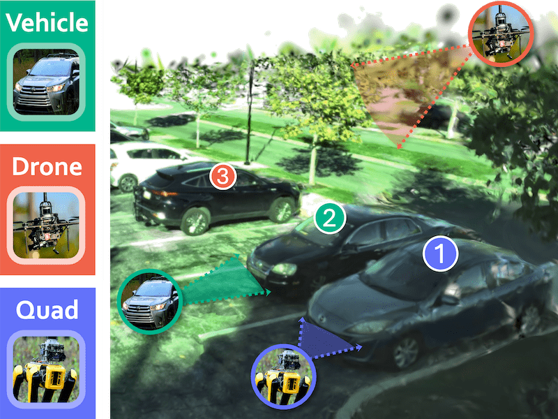
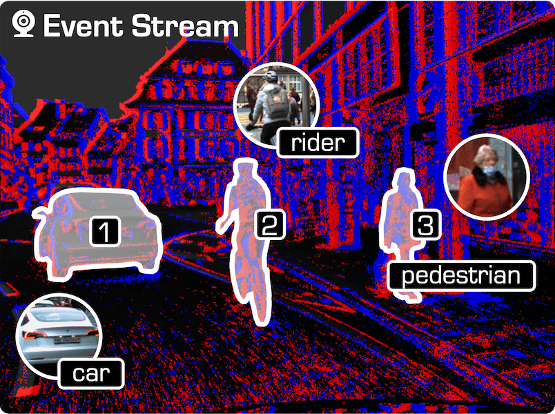
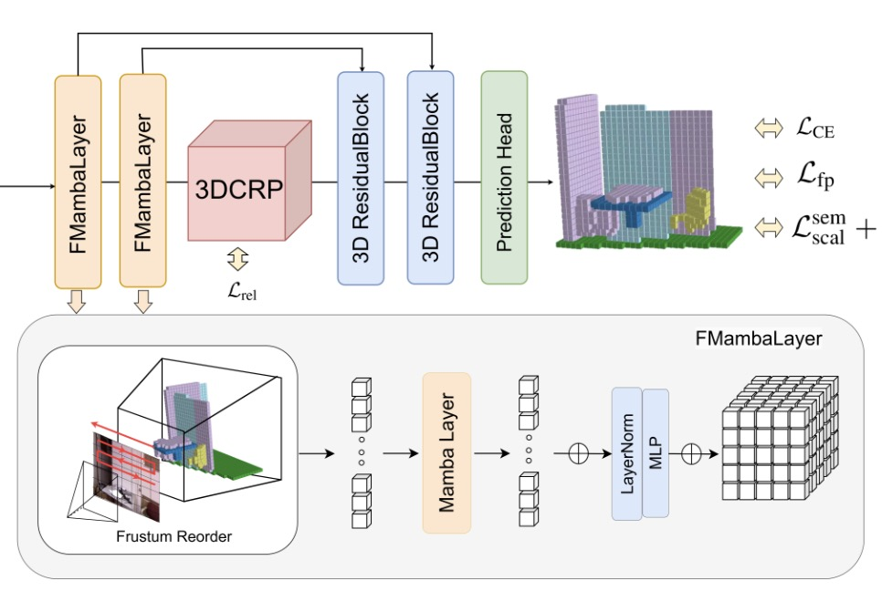
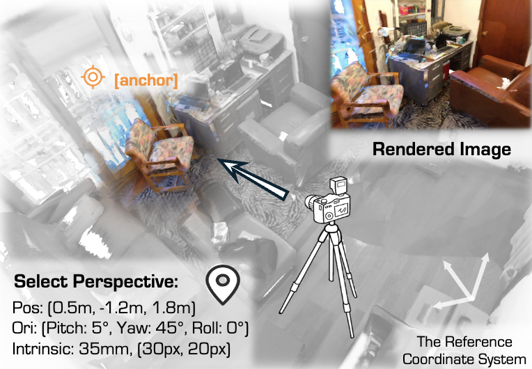
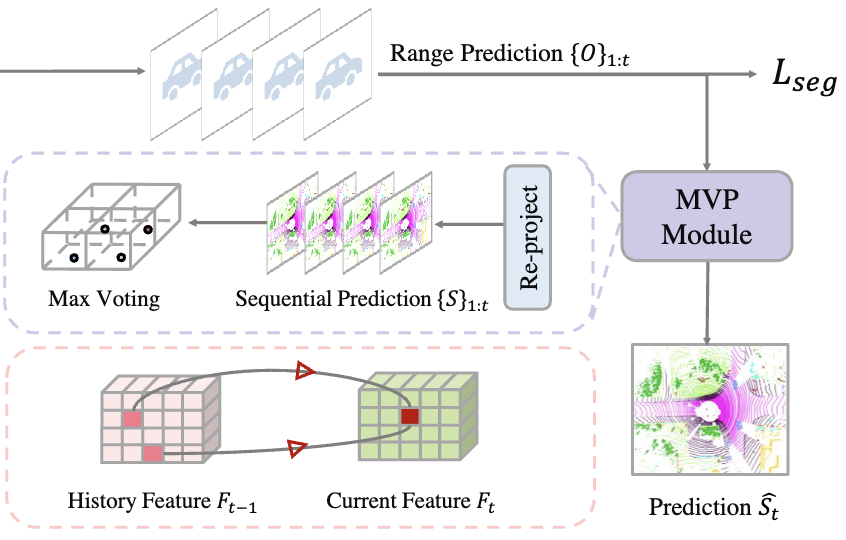
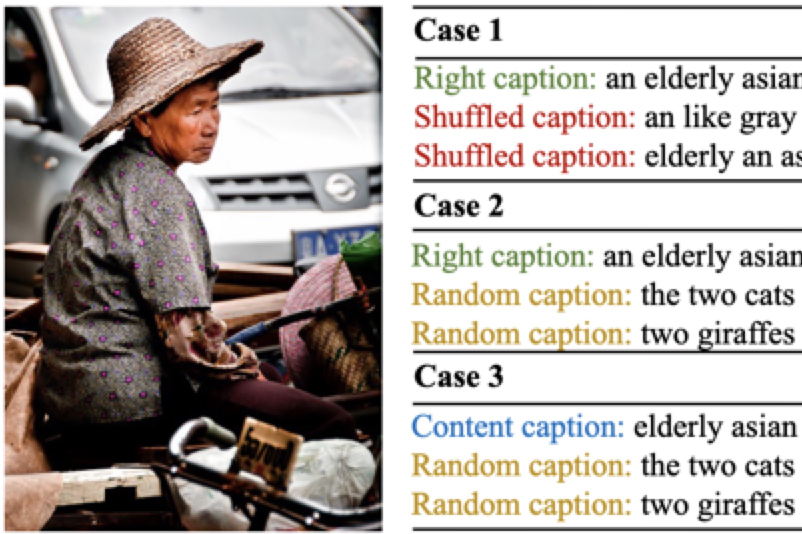
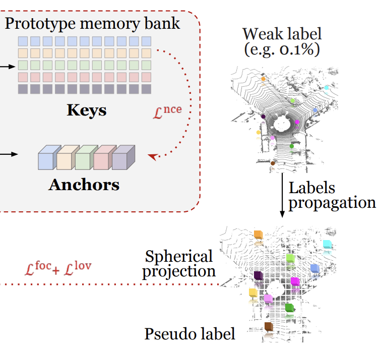
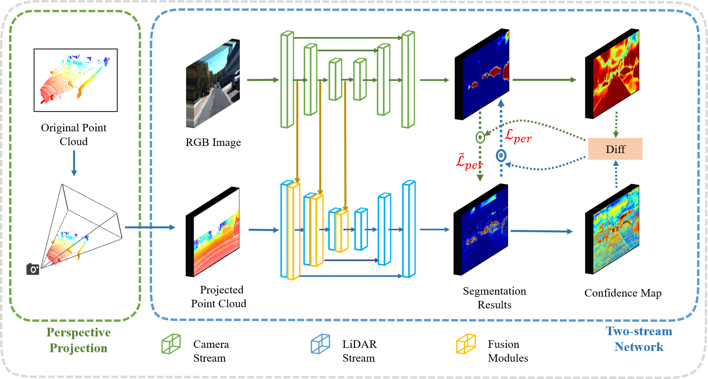

|

|
Stairway to Success: Zero-Shot Floor-Aware Object-Goal Navigation via LLM-Driven
Coarse-to-Fine Exploration
Zeying Gong,
Rong Li,
Tianshuai Hu, Ronghe Qiu, Lingdong Kong, Lingfeng Zhang,
Yiyi Ding, Leying Zhang, Junwei Liang.
IEEE Robotics and Automation Letters (RA-L), 2026
|
|

|
3EED: Ground Everything Everywhere in 3D
Rong Li*,
Yuhao Dong*, Tianshuai Hu*, Ao Liang*, Youquan Liu*, Dongyue Lu*, Liang
Pan, Lingdong Kong, Junwei Liang, Ziwei Liu
Advances in Neural Information Processing Systems (NeurIPS), 2025
|
|

|
Talk2Event: Grounded Understanding of Dynamic Scenes from Event Cameras
Lingdong Kong*, Dongyue Lu*, Ao Liang*,
Rong Li,
Yuhao Dong, Tianshuai Hu, Lai
Xing Ng, Wei Tsang Ooi, Benoit R. Cottereau
Advances in Neural Information Processing Systems (NeurIPS), 2025,
Spotlight (3.2%)
|
|

|
Global-Aware Monocular Semantic Scene Completion with State Space Models
Shijie Li, Zhongyao Cheng,
Rong Li,
Shuai Li, Juergen Gall, Xun Xu, Xulei Yang.
International Conference on Computer Vision (ICCV), 2025
|
|

|
SeeGround: See and Ground for Zero-Shot Open-Vocabulary 3D Visual Grounding
Rong Li,
Shijie Li, Lingdong Kong, Xulei Yang, Junwei Liang.
Computer Vision and Pattern Recognition (CVPR), 2025
|
|

|
TFNet: Exploiting Temporal Cues for Fast and Accurate LiDAR Semantic Segmentation
Rong Li,
Shijie Li, Xieyuanli Chen, Teli Ma, Juergen Gall, Junwei Liang.
CVPR Workshop on Autonomous Driving, 2024
|
|

|
An Examination of the Compositionality of Large Generative Vision-Language Models
Teli Ma,
Rong Li
, Junwei Liang.
The Nations of the Americas Chapter of the Association for Computational Linguistics (NAACL),
2024
|
|

|
Class-Prototypes for Contrastive Learning in Weakly-Supervised 3D Point Cloud Segmentation
Rong Li,
Anh-Quan Cao, Raoul de Charette.
The British Machine Vision Conference (BMVC), 2022
|
|

|
Perception-Aware Multi-Sensor Fusion for 3D LiDAR Semantic Segmentation
Zhuangwei Zhuang,
Rong Li,
Yuanqing Li, Kui Jia, Qicheng Wang, Mingkui Tan.
International Conference on Computer Vision (ICCV), 2021
|